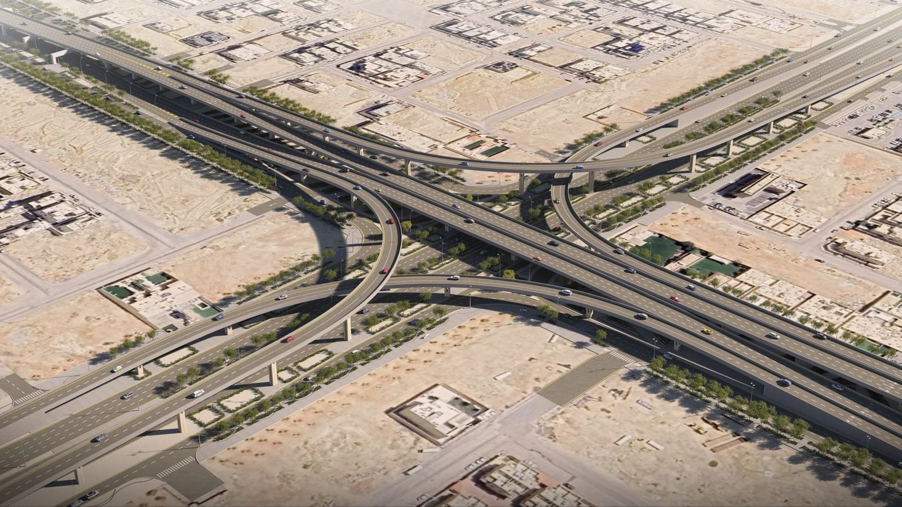

Construction Manager · Freyssinet SA · 2026 - Present
U.B.A.R Diamond Interchange Implementation
Project Allocated Budget: 3.2 B SAR
- Led multidisciplinary site teams to execute a 4.3 km RCRC infrastructure corridor comprising seven new bridges and a complex diamond interchange spanning King Salman and Anas bin Malik roads.
- Managed the SAR 2.6B package to elevate corridor capacity to 500,000 daily vehicles.
- Rigorous budget controls, strict HSE compliance, and phased three-lane traffic diversions without major disruptions.